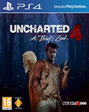

Uncharted 4

Los hermanos en peligro
Tres años después de los hechos acaecidos en Uncharted 3: La traición de Drake, Nathan Drake ha dejado atrás la búsqueda de tesoros. Sin embargo, el destino no tarda en llamar a su puerta cuando su hermano Sam reaparece pidiéndole ayuda para salvar su vida, además de ofrecerle participar en una aventura ante la que Nathan no puede resistirse. Los dos parten a la caza del tesoro perdido del capitán Henry Avery y en busca de Libertalia, el utópico refugio pirata que se halla en lo más profundo de los bosques de Madagascar. Uncharted 4: El desenlace del ladrón embarca al jugador en un viaje alrededor del globo por islas selváticas, grandes ciudades y nevados picos montañosos en busca del tesoro de Avery. PS4